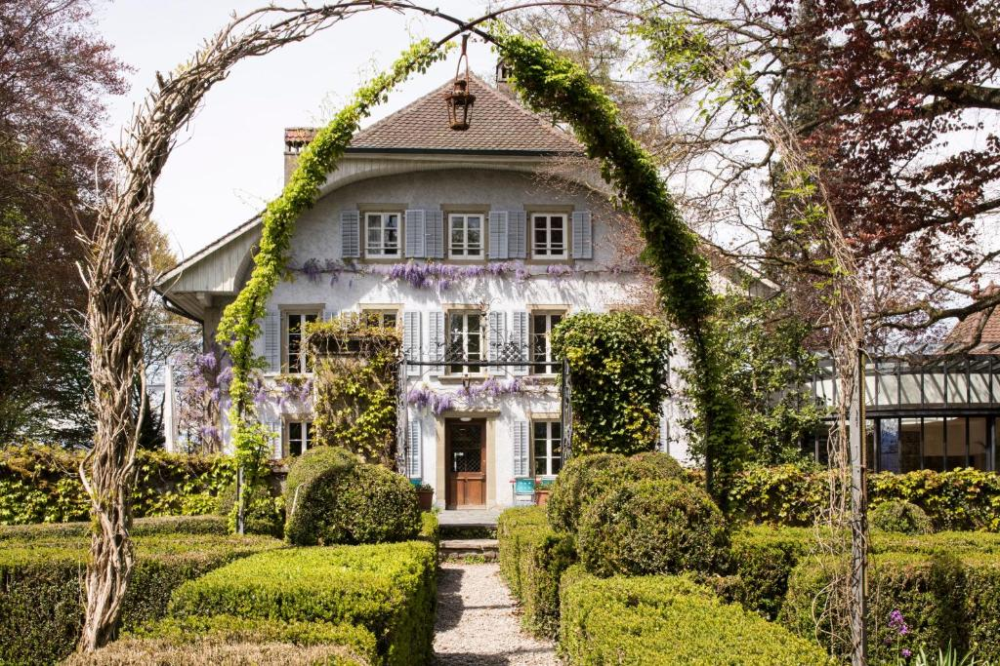
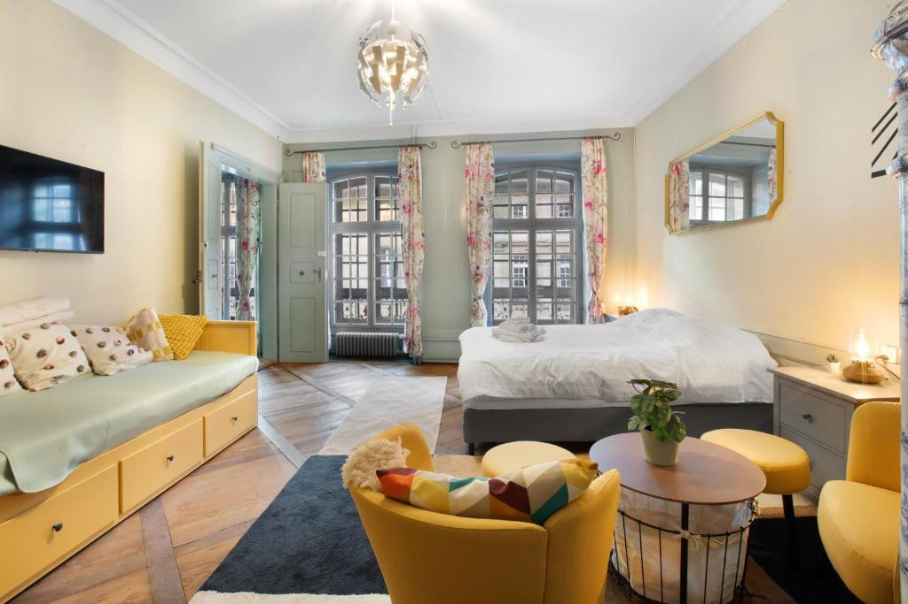
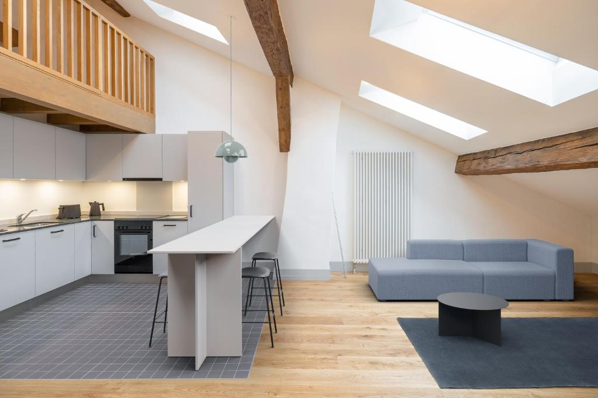
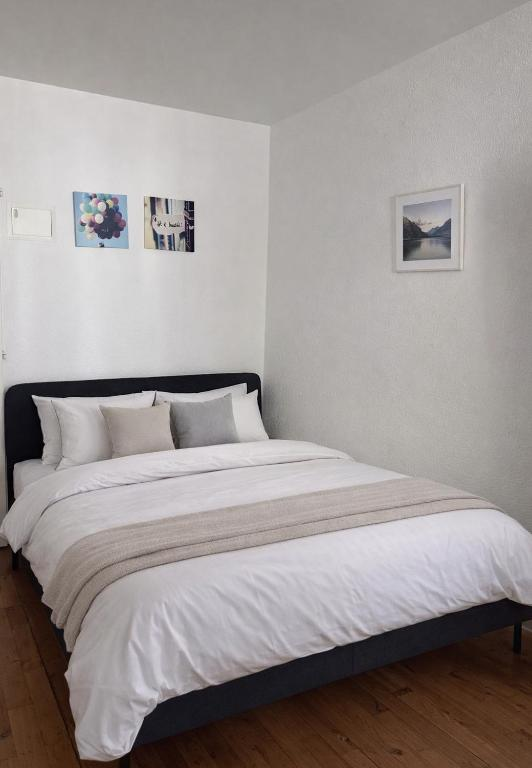

Situé à Fribourg, l’établissement Auberge aux 4 Vents possède une piscine extérieure ouverte en saison, un jardin, une terrasse et un restaurant.
Cet hôtel met à votre disposition un parking privé gratuit et une connexion Wi-Fi gratuite.
Tous les hébergements comportent une armoire.
Vous profiterez d'une salle de bains privative, d'articles de toilette gratuits et de linge de lit.
Un petit-déjeuner buffet, à la carte et continental est servi sur place.
Vous pourrez jouer au billard sur place.
Type: Auberge
Prix: Tarifs dès CHF 318,34 (1 nuit, 2 adultes)
Services inclus: wifi, parking privé, Petit-déjeuner, Piscine extérieure, Animaux admis
note: 8,3/10
Lien

Cet appartement se compose de 1 chambre, d'un salon, d'une kitchenette entièrement équipée avec un réfrigérateur et une machine à café,
ainsi que de 1 salle de bains avec une douche et des articles de toilette gratuits. Des serviettes et du linge de lit sont à disposition.
Type: studio
Prix: Tarifs dès CHF 272 (1 nuit, 2 adultes mais il faut prendre min 2 nuits)
Services inclus: wifi, Kitchenette privative
note: 8,7/10
Lien

Revêtus de parquet, les hébergements disposent d’une télévision à écran plat avec les chaînes du satellite,
d’un coin repas et d’une cuisine entièrement équipée avec un réfrigérateur. Leur salle de bains privative comprend une douche.
Certains logements sont pourvus d’une terrasse et/ou d’un balcon avec une vue sur la ville ou le cours d’eau.
Type: studio
Prix: Tarifs dès CHF 406 (2nuit - ~203 CHF/buit)
Services inclus: wifi, Service d'étage, Chambres familiales, Parking etc..
note: 9,0/10
Lien

Cet appartement compte 1 chambre, un salon comportant une télévision à écran plat,
une cuisine entièrement équipée, ainsi que 1 salle de bains avec une douche.
Type: studio
Prix: Tarifs dès CHF 173 (2 adultes)
Services inclus: wifi, Animaux admis, Cuisine privativeetc..
note: 7,5/10
Lien